01
项目的核心判断
多数冥想类装置停留在视觉氛围层面，体验柔和，反馈却缺少个体化。真正能帮助使用者进入状态的，是"自身生理节律被准确感知并被即时回应"——所以整个项目围绕一个工程问题展开：如何把看不见的呼吸与自主神经状态，转成可被身体理解的空间反馈。
一套完整的交互装置系统——从呼吸与 HRV 生理数据采集，到嵌入式实时解算、蓝牙数据传输、TouchDesigner 视觉联动，到最终的空间沉浸体验与焦虑缓解效果验证。我在这个项目中同时承担系统架构、嵌入式开发、信号处理和视觉叙事。
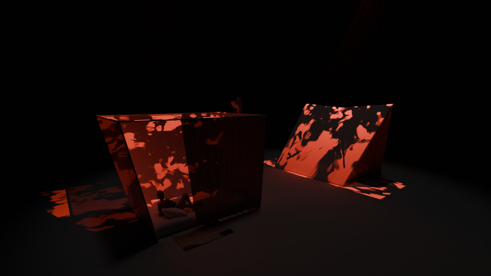
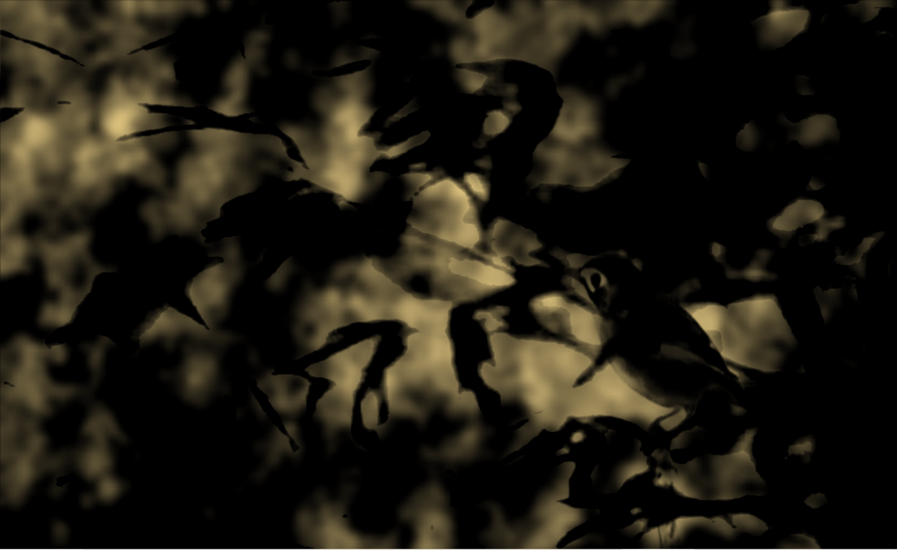
多数冥想类装置停留在视觉氛围层面，体验柔和，反馈却缺少个体化。真正能帮助使用者进入状态的，是"自身生理节律被准确感知并被即时回应"——所以整个项目围绕一个工程问题展开：如何把看不见的呼吸与自主神经状态，转成可被身体理解的空间反馈。
进入装置 → 被感知 → 获得反馈 → 节律趋稳 → 状态改善 → 数据验证。一个完整闭环，每个环节对应明确的技术实现。
投影重现阳光穿透树叶的光影交织——使用者越平静，光色越趋近朝霞的暖红，树影的晃动也越轻缓。
同时关心两件事：它是否足够打动人，它是否真的产生了生理层面的积极效果。前者需要空间设计与视觉表达，后者需要可量化的验证指标。两条线始终同步推进。
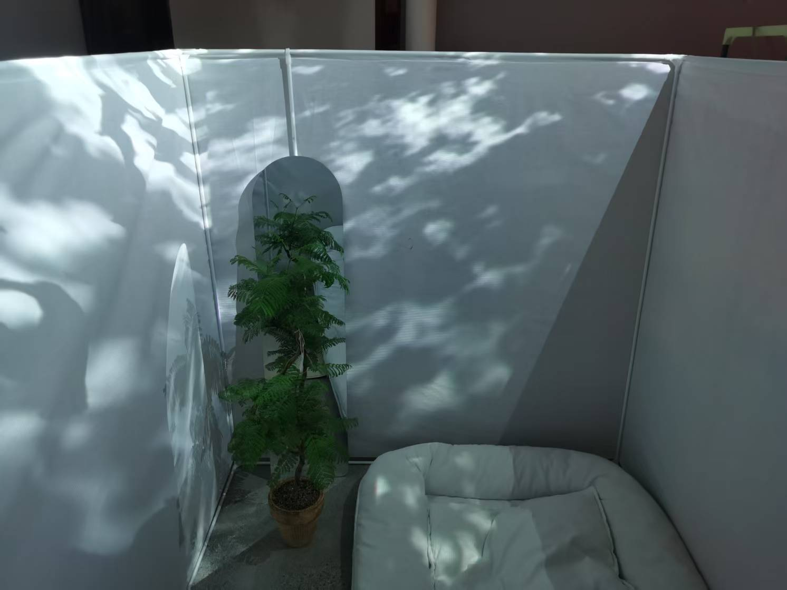


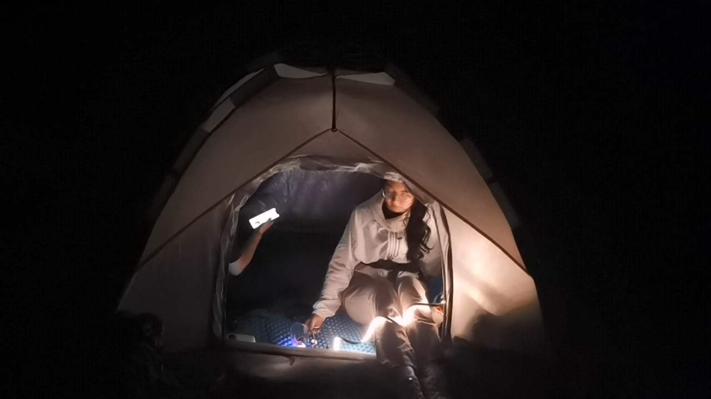
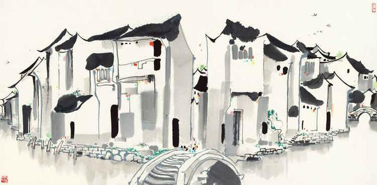
投影光色随呼吸频率实时迁移。呼吸趋缓，色温向朝霞与晚霞的橙红漂移；呼吸加快，光色回归冷白。使用者趋于安静的同时，空间进入黄金时分的光感。
树叶阴影的晃动速度直接由呼吸节律驱动。慢而深的呼吸让叶影趋向冥想性的静止，呼吸加快则影子的律动随之苏醒。空间在每次呼吸的间隔中，轻轻摇晃。
信号处理精度的意义在这里变得具体：读数偏差意味着投影的节律不属于你，体验的隐喻在那一刻断裂。ACF 延迟、谐波修正、Hilbert 置信过滤——每一步都在维护"空间响应的是你真实的节律"这一承诺。
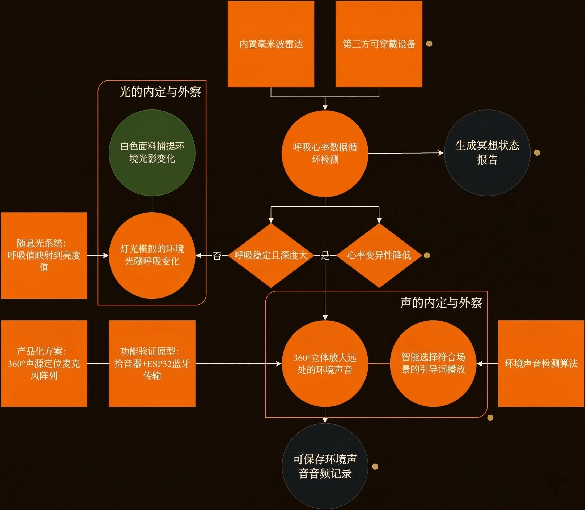
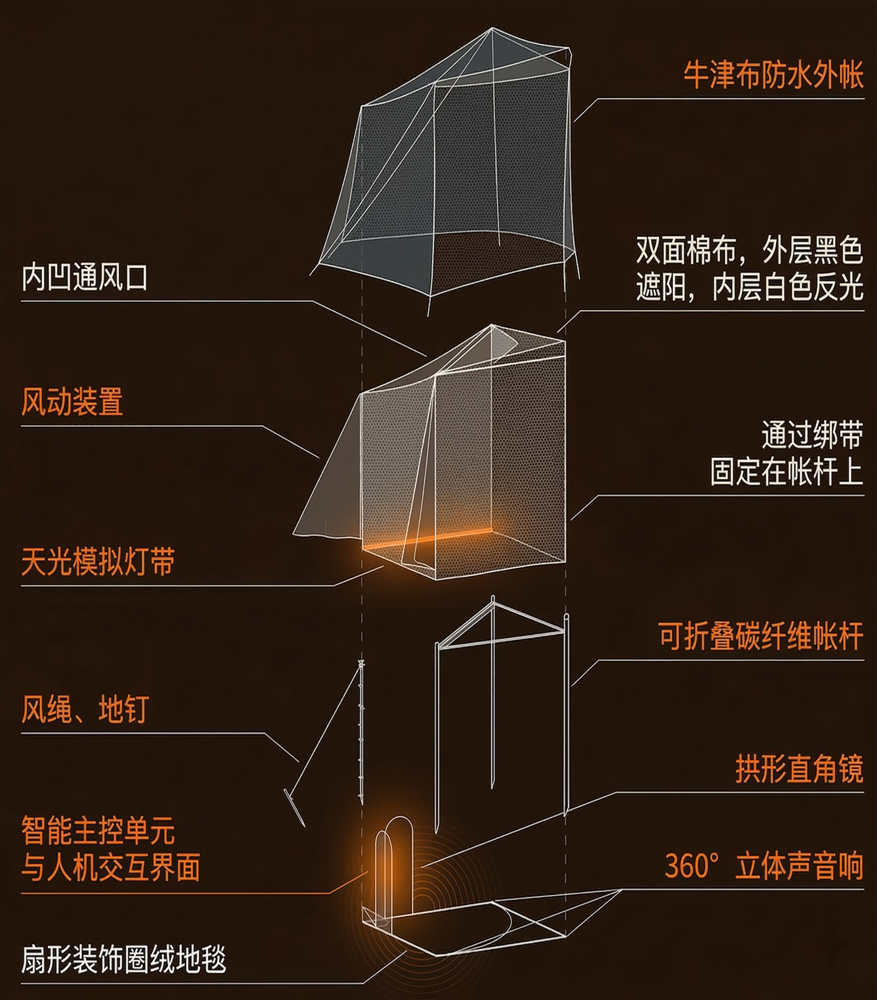
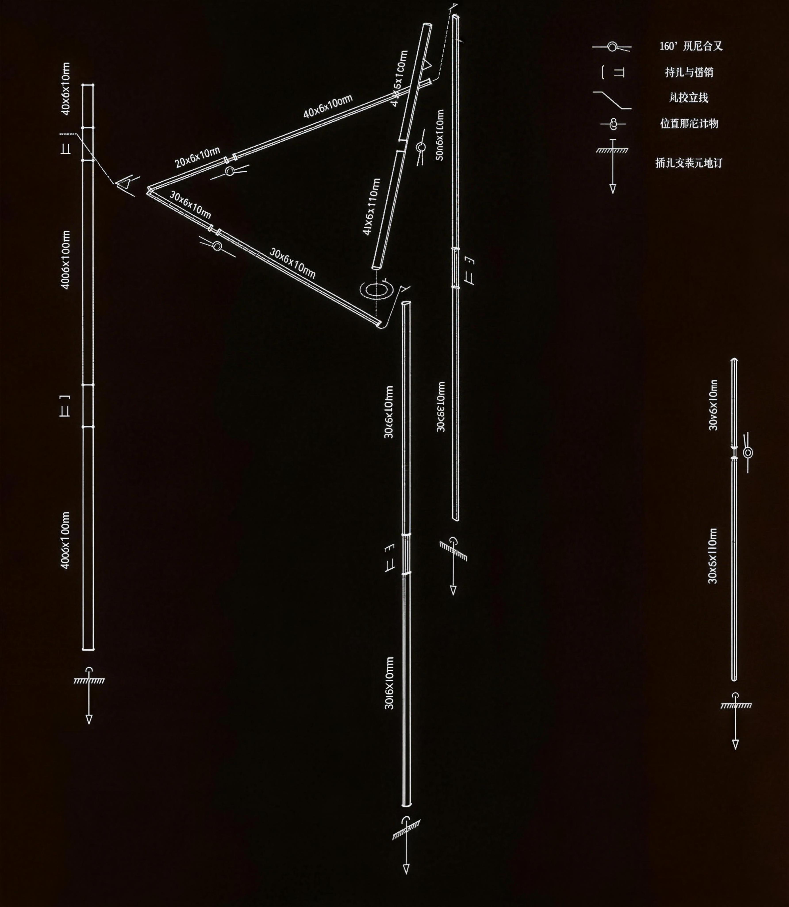
感知层、解算层、通信层、表现层和评估层的完整架构图。
呼吸估计的工程核心：滤波 → ACF → Hilbert → 置信度 → 伪影处理。
毫米波雷达、ESP32、蓝牙串口、TouchDesigner 与 HRV 验证支线的完整连接关系。
毫米波雷达减少穿戴摩擦，让体验更自然——适合最终装置。HRV 手环回答另一个问题：体验是否有效。一个降低交互门槛，一个提高证据密度。
氛围、沉浸、放松——这些感性描述需要对应到可跟踪变量：呼吸频率是否趋于稳定、视觉响应延迟是否足够低、伪影是否会破坏体验连续性、HRV 是否出现副交感活跃度相关的积极变化。感性目标翻译成技术指标，项目才能被推进和迭代。
视觉系统对噪声、抖动和过度敏感做了抑制。反馈像呼吸一样有张有弛——视觉平滑度、灯光渐变曲线、数据置信度阈值，全部属于体验设计的工程表达。
投影光温随呼吸放缓趋向橙红——这是映射逻辑的直接视觉结果，不是配色决定。朝霞与晚霞在跨文化语境中是具有高度共识的宁静时刻符码，与副交感激活状态在视觉层面自然对应。
原型阶段输入设备和输出媒介都在迭代。分层架构让系统替换成本更低，验证路径更清晰。
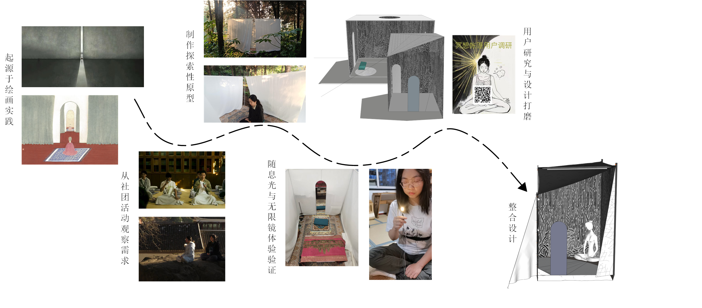
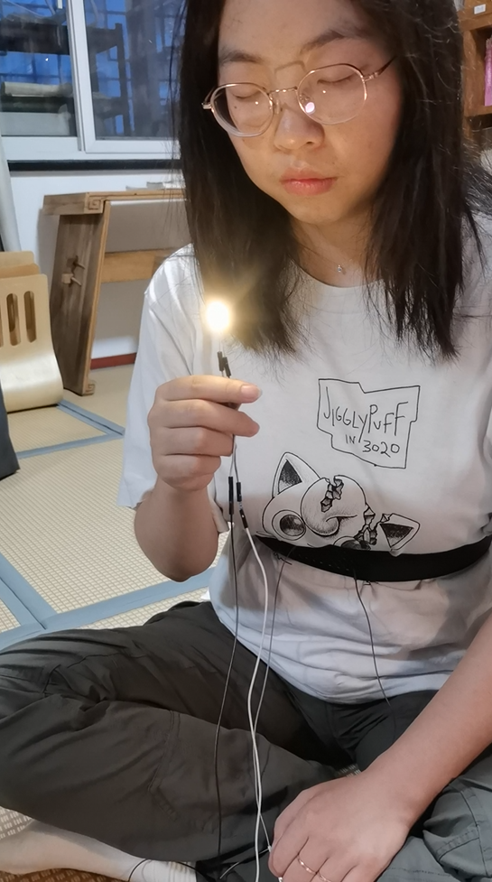

美学建立吸引力。产品思维组织体验路径。工程思维让一切可运行、可测量、可迭代。
毫米波雷达与木漏日投影负责无负担的体验入口，降低穿戴摩擦，让使用者自然进入状态。
HRV 手环提供时域生理指标，检测副交感活跃度是否在体验过程中出现积极变化。
体验与验证同时纳入，装置从"氛围设备"升级为"可评估的身心交互界面"。
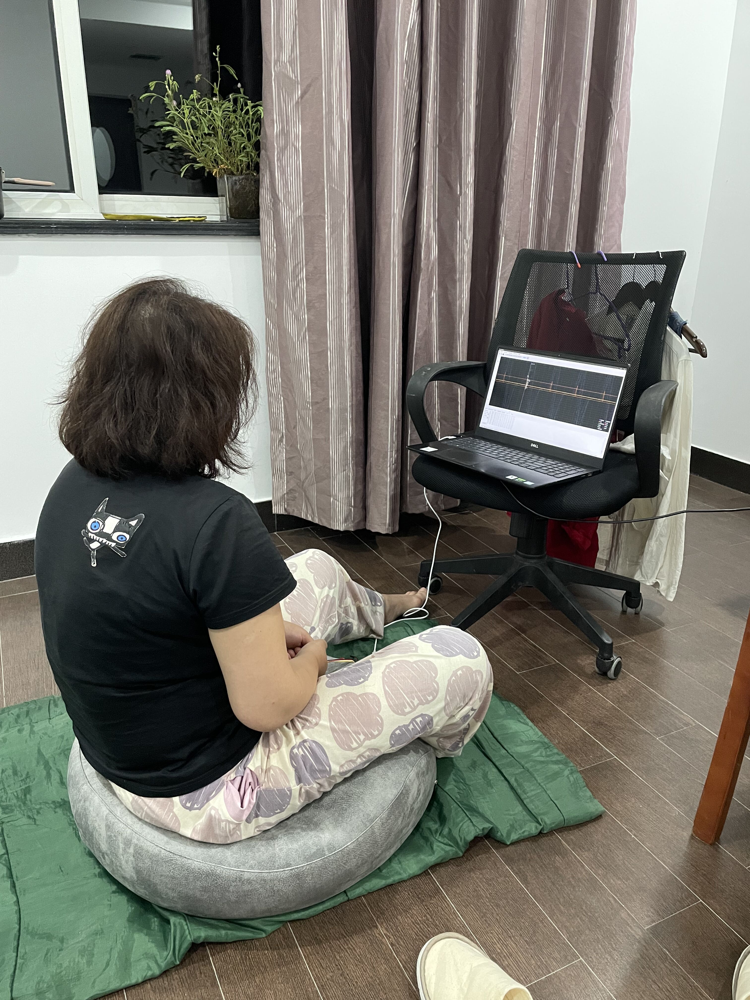
覆盖硬件调试、通信协议、算法迭代与性能评估全流程。
Gen 1 WiFi TCP → Gen 11 完整信号链。每版本回答一个具体问题。
8 个功能模块，含 Python 接口脚本约 40 行。
20s 窗口 @10 Hz 采样。在艺术装置驱动场景中可接受。
固定窗口 ACF 在呼吸频率快速变化时的惯性问题是结构性约束，难以通过参数调整根本解决。1D-CNN 的感受野可自适应呼吸周期长短，与传统 ACF 形成互补。目标：MAE < 1.5 BPM，TFLite Micro 量化后部署至 ESP32 Flash（<100 KB），完全离线推理。
传感器连接、串口数据读取、滤波与节律估计、蓝牙输出控制。保证实时性与数据稳定性。
呼吸率检测驱动体验，HRV 验证效果。装置从"有感觉"推进到"有证据"。
承接实时数据，生成木漏日投影，将身体节律翻译为光温与影速的双轨视觉语言。
进入方式、节奏递进、反馈语言与验证机制，构成完整体验路径。
关心装置给人的第一感受。视觉、排版、节奏、材质语义——体验的每一层都需要被设计。
原型能跑、能连、能调、能解释、能继续迭代。工程可靠性是体验可信度的前提。
输入信号、处理逻辑、输出媒介、用户状态、环境语义和评估指标——必须在同一张图里被理解。Meditation Tent 就是那张图。
如果你在寻找一个能同时处理实时系统、组织视觉叙事、把产品验证纳入体验设计的人——这类项目正是我的工作语境。
Creative Technology / Embedded Prototyping / Human-Centered Systems / Editorial Web / Experience Validation